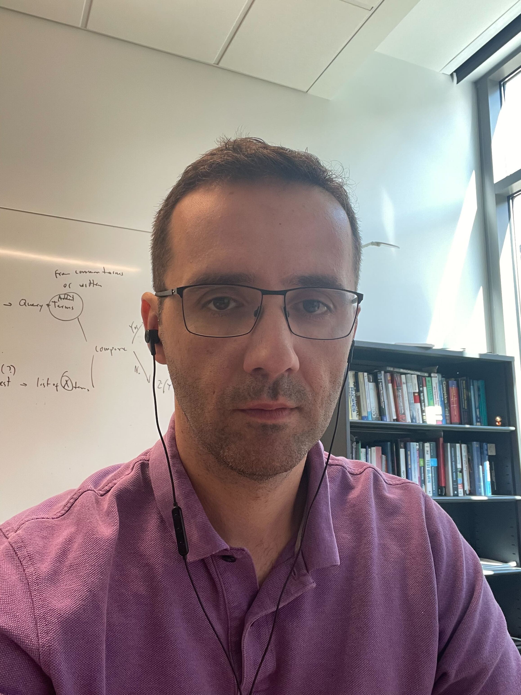

Graduate Program Director, Department of Computer Science
Co-Director, VCU Software Engineering Center
Engineering Research Building, Rm. 2324 · Richmond, Virginia
kdamevski@vcu.edu
I build machine learning and AI systems that study and support how software developers communicate, reason about code, and handle security. My group works in three areas: developer and human–AI conversations, security of AI-assisted software engineering, and fine-grained code change analytics.